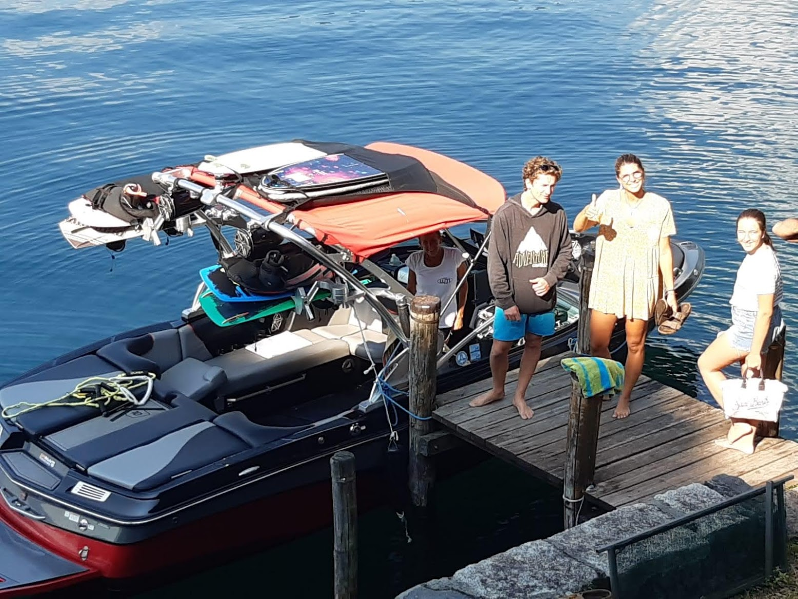
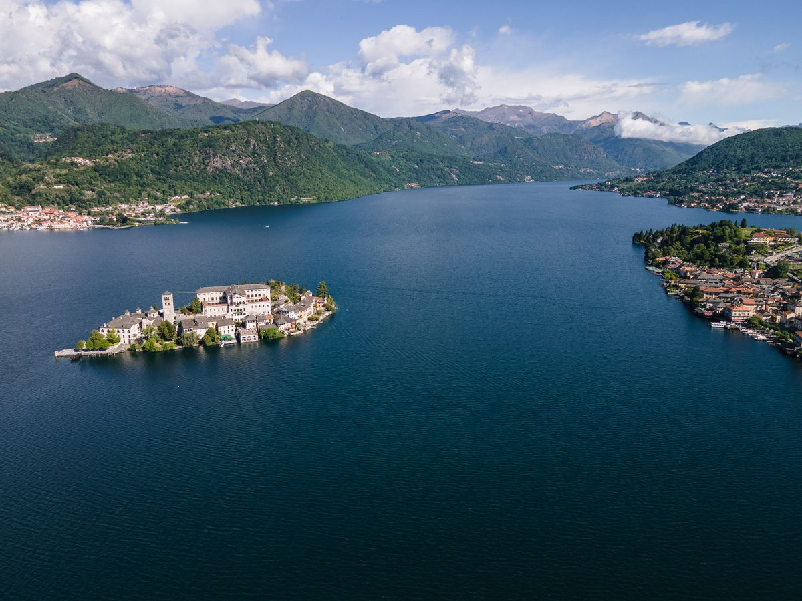
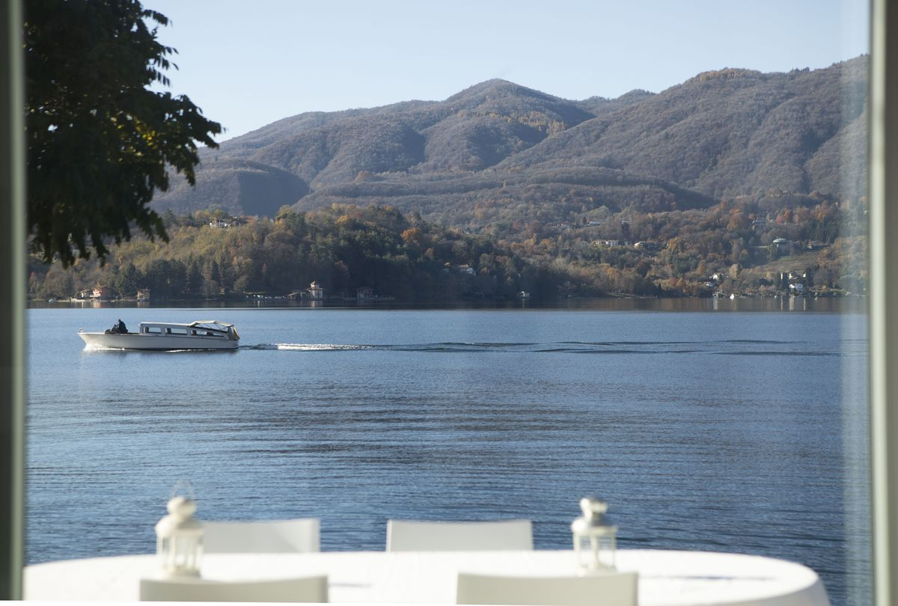

Quando si pensa a una vacanza sui laghi italiani, gli sport acquatici sono raramente in cima alla lista. L'immaginario è fatto di borghi pittoreschi, lunghi pranzi e pigre gite in barca. Ma il Lago d'Orta nasconde una sorpresa: è uno dei posti migliori d'Europa per wakeboard, wakesurf e sci nautico — e se soggiorni a Villa Volpe, la barca può venirti a prendere direttamente al tuo pontile privato.

Perché il Lago d'Orta è perfetto per il wakeboard
Chiedi a qualsiasi wakeboarder esperto cosa rende un lago ideale e ti dirà due cose: acqua piatta e condizioni pulite. Il Lago d'Orta le offre entrambe, in un modo che i laghi italiani più grandi e più famosi semplicemente non possono eguagliare.
Con appena 13,4 chilometri di lunghezza e 2,5 di larghezza, il Lago d'Orta è straordinariamente riparato. Le montagne che lo circondano bloccano il vento da quasi ogni direzione, creando una superficie così piatta da sembrare vetro lucidato quasi ogni mattina e ogni sera. Rispetto al Lago Maggiore, al Lago di Garda o al Lago di Como — dove traghetti, motoscafi e venti dominanti increspano l'acqua senza tregua — l'Orta resta calmo. E per wakeboard e wakesurf questo è tutto: una scia piatta significa curve più pulite, salti migliori, atterraggi più morbidi e molto più divertimento, per i principianti come per i pro.
E poi c'è l'acqua in sé. Il Lago d'Orta ha vissuto un notevole recupero ecologico negli anni Novanta ed è oggi uno dei laghi più puliti d'Italia. La trasparenza è impressionante: si vede a metri di profondità. Per chi fa wakesurf senza corda appena dietro la barca non è solo una questione estetica: scivolare su un'acqua cristallina circondato da scenari alpini è un'esperienza che ti resta dentro.
Wake&More: il tuo partner sull'acqua
I nostri amici di Wake&More sono i professionisti dietro questa esperienza. Con base sul Lago d'Orta, gestiscono un centro di sport acquatici completamente attrezzato, con barche da wakeboard di livello agonistico e istruttori esperti che seguono tutti, dai principianti assoluti agli atleti da competizione.
Wake&More propone lezioni e sessioni di wakeboard, wakesurf, wakefoil, wakeskate, sci nautico e stand-up paddle. Organizza camp estivi con coach internazionali e ospita perfino gare di wakesurf di livello nazionale sul Lago d'Orta — la prova che questo piccolo lago tranquillo gioca ben al di sopra della sua categoria nel mondo degli sport acquatici.
Che tu non sia mai salito su una tavola o che stia inseguendo gli invert sopra la scia, il loro team adatta la sessione al tuo livello. E se viaggi con i bambini, hanno anche programmi dedicati ai giovani rider.

Dal pontile di Villa Volpe alla scia
Ed è qui che per gli ospiti di Villa Volpe le cose si fanno speciali. Su richiesta, la barca di Wake&More può venire direttamente al pontile privato di Villa Volpe a prenderti. Niente auto fino a un porticciolo, niente attrezzatura da trasportare, zero logistica. Scendi dal giardino, sali sul pontile, e pochi minuti dopo stai disegnando curve sulla superficie a specchio del Lago d'Orta, con l'Isola di San Giulio sullo sfondo.
Dopo la sessione, la barca ti riporta esattamente lì. Ti sciacqui sotto la doccia esterna, prendi qualcosa di fresco da bere e ti godi il resto del pomeriggio sulla spiaggia privata — i muscoli piacevolmente stanchi, l'adrenalina ancora in circolo. È quel tipo di esperienza senza attriti che trasforma un'attività da vacanza in uno dei momenti più belli del viaggio.
Le condizioni migliori: quando andare
Sul Lago d'Orta si può uscire da maggio a settembre, con condizioni al top in giugno, luglio e agosto. Le prime ore del mattino e il tardo pomeriggio offrono di solito l'acqua più piatta, quando il lago si trasforma in uno specchio. In estate la temperatura dell'acqua raggiunge piacevoli 22–24°C, abbastanza calda per sessioni prolungate senza una muta pesante.
Il bello delle dimensioni contenute dell'Orta è che, anche nelle giornate estive più affollate, il traffico di barche non si avvicina nemmeno a quello del Garda o del Maggiore. L'acqua resta piatta e navigabile per fasce di giornata molto più lunghe.

Non solo per esperti
Se non hai mai provato wakeboard o wakesurf, il Lago d'Orta è probabilmente il posto migliore per imparare. L'acqua piatta perdona molto più delle condizioni mosse di altri laghi: meno cadute e progressi più rapidi. Gli istruttori di Wake&More sono pazienti, professionali e sinceramente appassionati nel far alzare in piedi i nuovi arrivati. La maggior parte dei principianti riesce a stare in piedi e a planare già alla prima sessione.
Il wakesurf, in particolare, è esploso di popolarità perché è accessibile praticamente a chiunque. Cavalchi la scia della barca senza corda di traino, surfando un'onda infinita a bassa velocità. È incredibilmente divertente, sorprendentemente facile da imparare e non ha nulla dell'intensità da batticuore dello sci nautico tradizionale. Le famiglie con adolescenti lo adorano.
Un'esperienza completa del Lago d'Orta
Abbinare un soggiorno a Villa Volpe a qualche sessione di sport acquatici sul Lago d'Orta crea qualcosa di raro: una vacanza sui laghi italiani che bilancia relax e vera avventura. La mattina fai wakesurf su un'acqua piatta come il vetro. A pranzo sei seduto in una piazza medievale. La sera cammini un chilometro fino alla Villa Crespi tre stelle Michelin dello chef Cannavacciuolo.
Il Lago d'Orta dimostra che non serve un lago enorme e affollato per praticare sport acquatici di livello mondiale. A volte, i posti più tranquilli lo fanno meglio.
Come prenotare
Per organizzare una sessione di wakeboard o wakesurf durante il tuo soggiorno a Villa Volpe, basta dircelo al momento della prenotazione o contattare direttamente Wake&More. Coordineranno loro il ritiro in barca dal pontile di Villa Volpe in base agli orari e all'attività che preferisci.
Prenota il tuo soggiorno a Villa Volpe e scopri perché il Lago d'Orta è il segreto meglio custodito dei laghi italiani — sull'acqua e non solo.